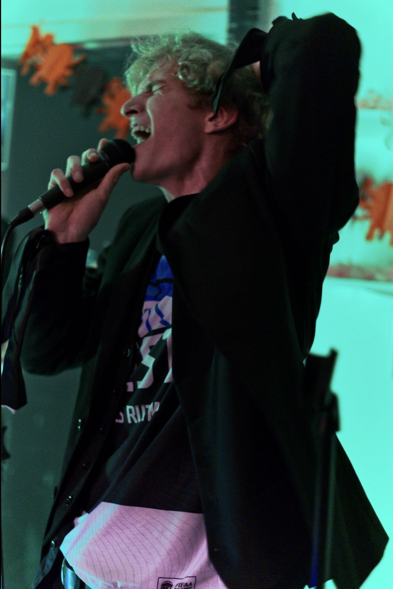
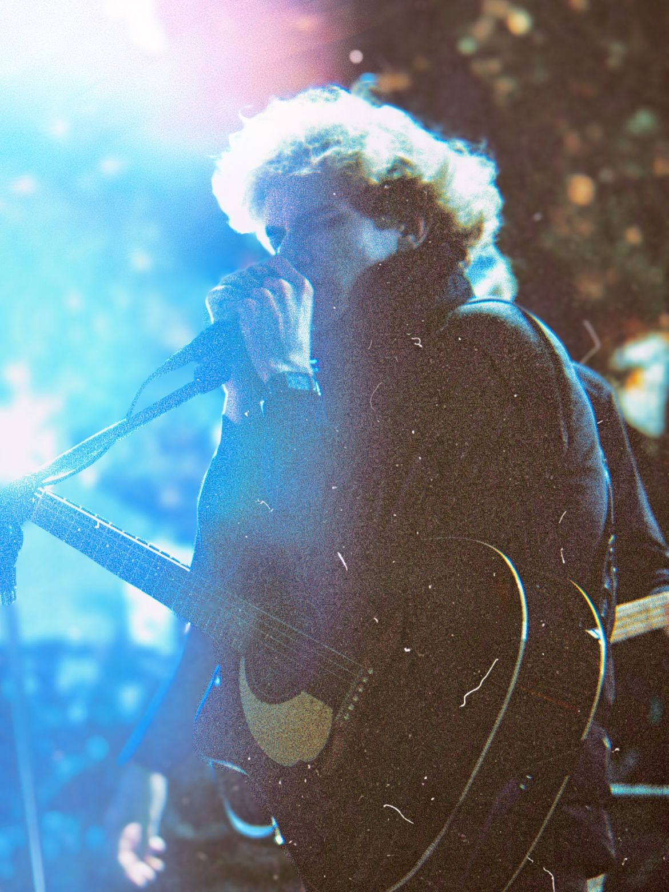

My Idea
For my final project I want to make a personal artist website for myself as a musician. I play in a band, but very soon I'm doing a solo concert and right now there is no one place where people can find my music, my socials and info about me.
So the idea is a simple promo website, like an artist page, where everything important about me is in one place.
What will be on the website
- Home page with a big photo and my name
- About me
- Upcoming shows (starting with the solo concert)
- Links to all my socials and music
- Photos
- Contact for booking
Photos
Some pictures from shows with my band that I want to use for the website.


Style
I want it to look dark and a bit raw, mostly black and white so the photos are the main thing. For the headings I picked Bebas Neue and for the normal text Arial.